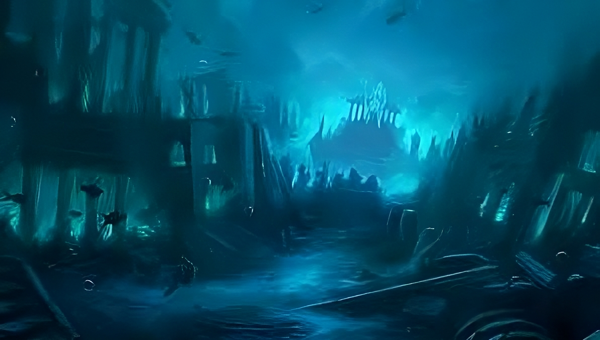
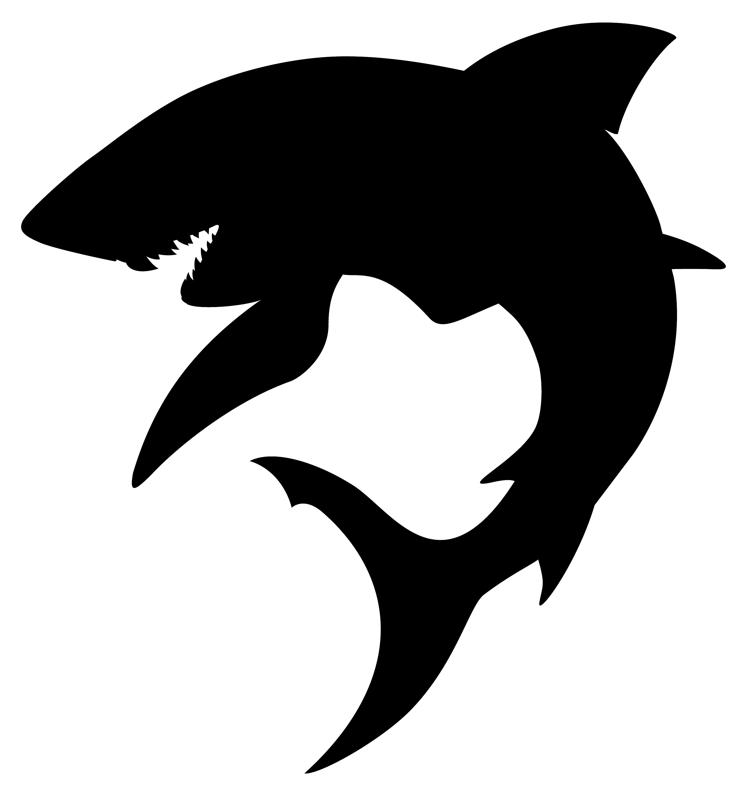
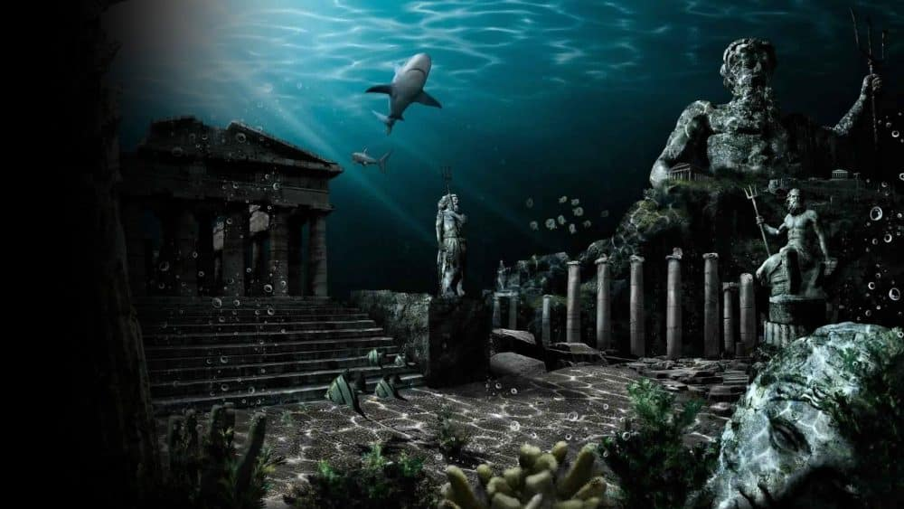
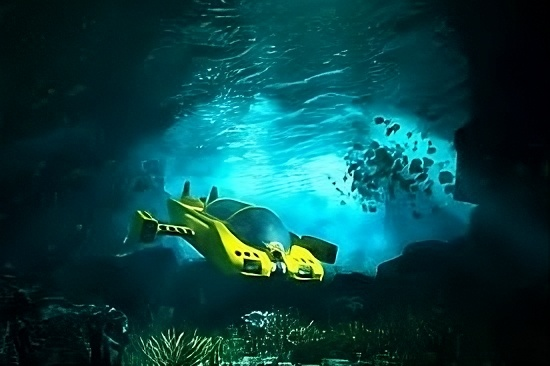

Debaixo da superfície azul dos oceanos existe um universo inexplorado — misterioso, silencioso e surpreendentemente vivo.
A milhares de metros abaixo do nível do mar, onde a luz do sol nunca chega, criaturas bizarras brilham no escuro, ecossistemas inteiros prosperam ao redor de fontes hidrotermais, e ruínas submersas sussurram histórias do passado.
Menos conhecido do que a Lua, o fundo do mar ainda esconde 95% de seus mistérios. Cada nova expedição revela espécies nunca vistas, formações geológicas surreais e segredos que desafiam a imaginação.
Prepare-se para mergulhar em um mundo onde a realidade é mais fantástica do que qualquer ficção. Os segredos das profundezas estão esperando por você.
Desvende os Segredos das Profundezas Oceânicas
As Criaturas Mais Bizarras das Profundezas
O fundo do mar guarda segredos que a humanidade mal consegue imaginar. Nas sombras abissais, onde a luz do sol jamais chega, vivem criaturas tão estranhas que parecem saídas de um filme de ficção científica. Com dentes afiados, corpos translúcidos, luzes bioluminescentes e formas que desafiam a lógica, esses seres são a prova de que a natureza não tem limites para a criatividade. Prepare-se para mergulhar em um universo misterioso e descobrir as espécies submarinas mais bizarras do planeta!

Clique acima para saber mais
O Reino Perdido de Atlântida
Imagine uma civilização perdida, mais avançada que as maiores potências da antiguidade, com tecnologia inexplicável e sabedoria ancestral. Uma ilha lendária que, em um único dia de fúria dos deuses, desapareceu nas profundezas do oceano, levando consigo segredos que poderiam mudar a história. Este é o mistério de Atlântida.

Clique acima para saber mais
As Expedições Para o Desconhecido
O oceano cobre mais de 70% do nosso planeta, mas menos de 5% dele foi explorado. Nas profundezas escuras e misteriosas, há mundos perdidos, criaturas fascinantes e tesouros que desafiam a imaginação. Esta é a emoção das expedições submarinas!
Clique acima para saber mais
De naufrágios históricos a vulcões subaquáticos, de cidades submersas a espécies nunca antes vistas—cada mergulho é uma aventura rumo ao desconhecido. Com tecnologia de ponta e coragem inabalável, cientistas e exploradores modernos desvendam segredos guardados há séculos no reino silencioso das águas.